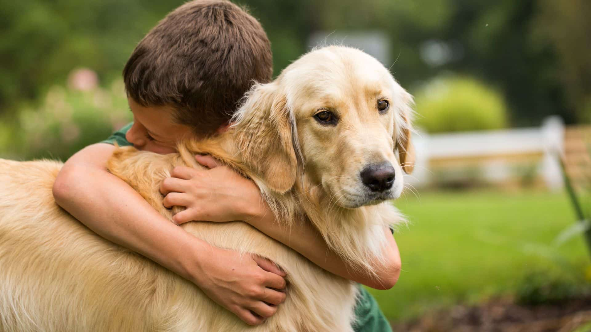
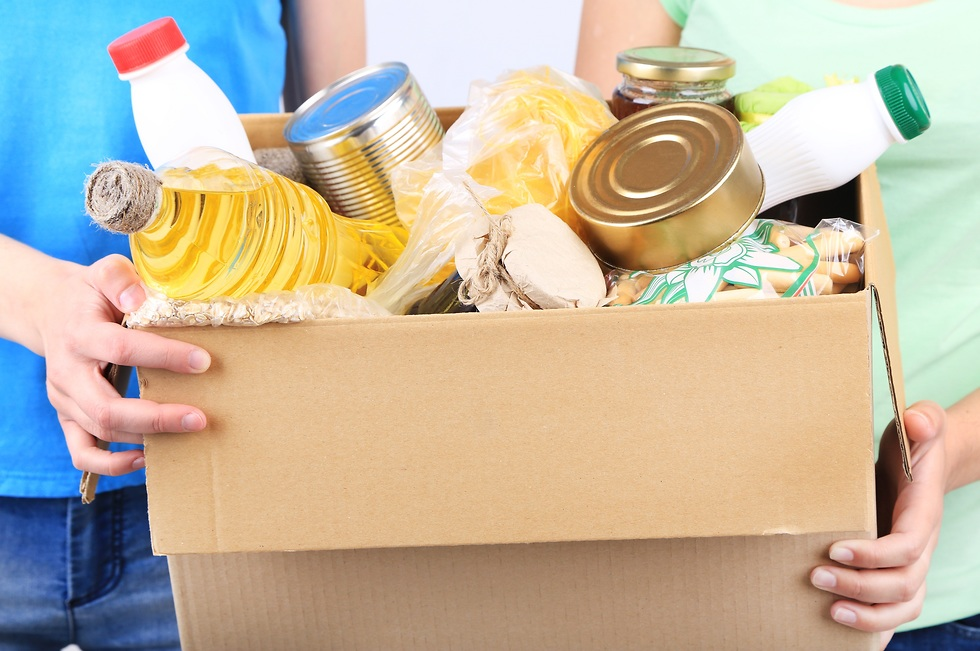
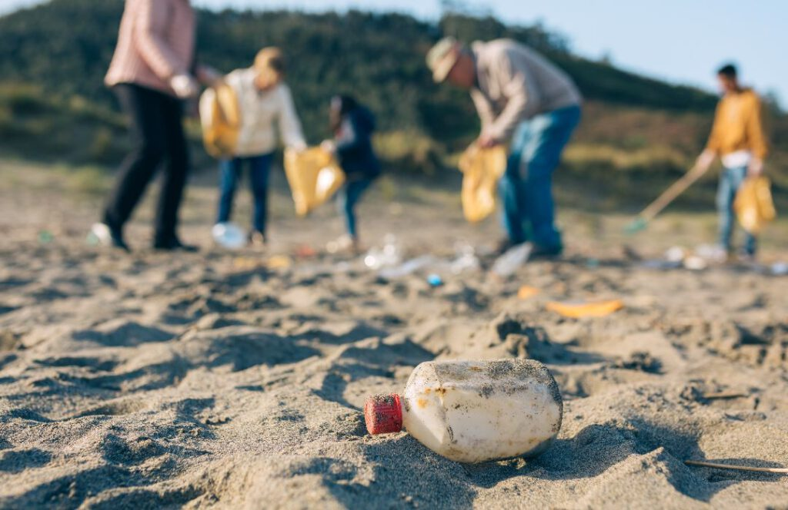
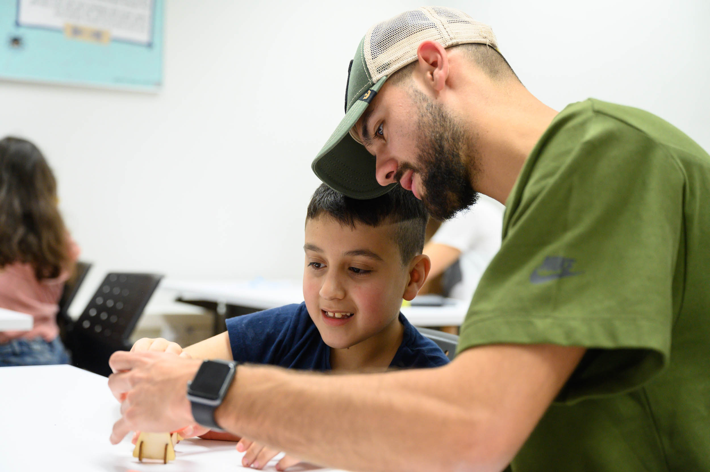

כל העמותות
מצא את המקום שהכי מתאים לך

יד לקשיש
סיוע לקשישים בודדים, חלוקת מזון ושיחות הפגה לשיפור איכות חייהם.

צער בעלי חיים
התנדבות עם כלבים וחתולים, עזרה בניקיון הכלבייה וימי אימוץ.

ארגון לתת
אריזת חבילות מזון למשפחות נזקקות לקראת החגים וחלוקה לבתים.
ליצנות רפואית
משמחים ילדים בבתי חולים, מגיעים למחלקות ועושים שמח למי שהכי מגיע לו.

עתיד ירוק
שמירה על הטבע, ניקיון חופים ויערות, ונטיעת עצים למען הסביבה.

אח בוגר
חונכות אישית לילדים ונוער בסיכון, עזרה בשיעורי בית ומשחק משותף.